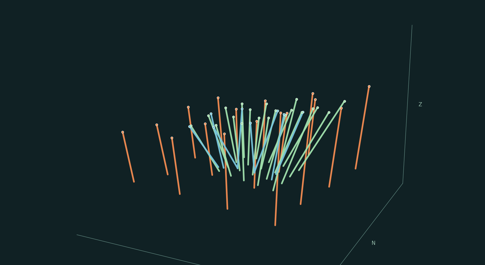
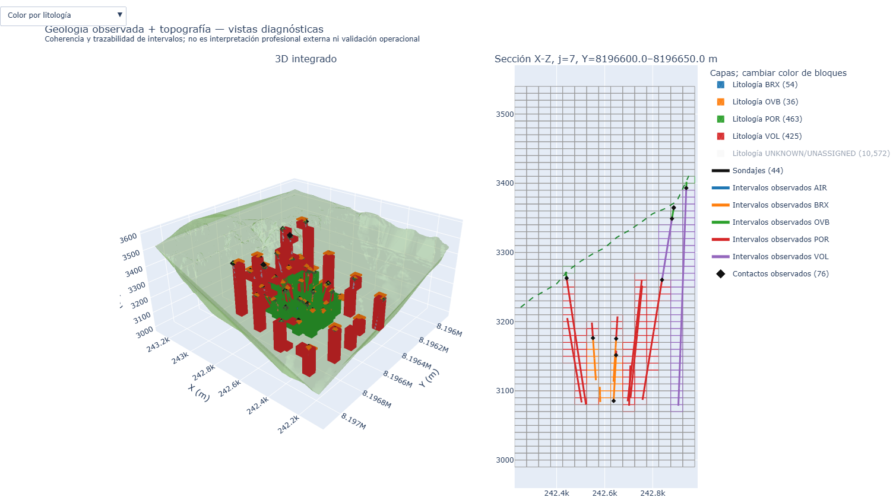

01 / NUESTRO PROYECTO
GRUPO 05 · SANTA ELENA
De los sondajes a un
De los sondajes a un
modelo que podemos leer.
Construimos un modelo de bloques categórico y preliminar a partir del release académico DS05 / EXP03. Aquí veremos qué proviene de observaciones, qué se calculó y dónde aún falta conocimiento.

SONDAJES 3D · G0544 TRAYECTORIAS
Camp. 01 · 16Camp. 02 · 20Camp. 03 · 8
Trayectorias del grupo en X, Y, Z · arrastra para girar
CÓMO LLEGAMOS AQUÍ
01ExploraciónObservaciones
02TrayectoriasPosición X, Y, Z
03CompósitosSoporte de 2 m
04Bloques50 × 50 × 10 m
05Topografía y códigosDiagnóstico
Momento E1. Estas pantallas conservan el corte del modelo preliminar usado por la ficha de 21 observaciones. En ese corte no hay leyes, densidad ni tonelaje estimados por bloque. Después del cierre E1 y la teoría, abre S11 y S12 para consultar sus generaciones cuantitativas.
02 / NUESTROS DATOS
Primero, las observaciones.
Tres campañas aportan sondajes, ensayes e intervalos litológicos. La densidad que aparece aquí es una medición en muestras, no una propiedad estimada para cada bloque.
44sondajes
313estaciones survey
5803intervalos de ensaye
120intervalos litológicos
459densidades observadas
COBERTURA POR CAMPAÑA
DATOS FUENTESondajes y ensayes
Las barras muestran cantidades de registros, no calidad o representatividad espacial.
DE LA PROFUNDIDAD AL ESPACIO
¿Dónde quedó cada intervalo?
CollarPunto inicial X, Y, Z
→SurveyDirección con profundidad
→DesurveyTrayectoria calculada
→IntervaloPosición X, Y, Z
La trayectoria y los intervalos son resultados geométricos derivados de observaciones. No constituyen por sí solos un sólido geológico.
INVENTARIO COMPROBADO
Las tres campañas del release
| Campaña | Sondajes | Survey | Ensayes | Litología | Densidad |
|---|
Una distinción que importa. La ley de Cu en un ensaye y la densidad medida en una muestra describen intervalos. Ninguna de las dos llena automáticamente el bloque que los rodea.
03 / COMPOSITADO
Un soporte comparable,
sin borrar los contactos.
Un ensaye describe un tramo muestreado. Un compósito reúne material dentro de una longitud objetivo para comparar soportes; puede dividir ensayes y ponderar Cu por longitud. El grupo adoptó 2 m como objetivo y conservó los residuos más cortos.
EJEMPLO REAL · SE-C01-001 · PROFUNDIDAD 8–13 m
CÓDIGOS LITERALESEl contacto cambia la lectura
El ensaye SE-C01-001-A0005 va de 8 a 10 m, pero el contacto OVB → VOL está a 9 m. El compósito 8–9 m queda como residuo OVB; el siguiente 9–11 m corresponde a VOL y usa aportes de dos ensayes. Los valores y tramos vienen de los CSV del grupo.
8 m9 m10 m11 m12 m13 m
CONTACTO OBSERVADO · 9 m
Ensaye observado OVB VOL Residuo
Por qué 2 m
Se buscó un soporte de longitud comparable para el ejercicio. La regla mantiene separados los códigos litológicos y conserva los tramos residuales: 2 m es un objetivo, no una orden de mezclar contactos o inventar mediciones.
Qué todavía no dice
Una ley de compósito representa su tramo del sondaje. No es la ley de un bloque ni valida la continuidad geológica entre sondajes.
04 / MODELO PRELIMINAR DE BLOQUES
Una malla para ubicar
lo conocido y lo pendiente.
La malla local tiene 15 × 14 × 55 celdas de 50 × 50 × 10 m. Ese tamaño fue una decisión conceptual para el modelo preliminar; los 10 m verticales y el origen local aún tienen límites de justificación.
CLASIFICACIÓN TOPOGRÁFICA
Roca, aire y cruce
El estado PARTIAL identifica cruce en el centro XY; no calcula fracción volumétrica de roca.
ASIGNACIÓN LITOLÓGICA
Lo que sí tiene soporte
Los códigos se mantienen literales: el release no documenta su significado oficial.
MÉTODO Y LÍMITE
¿Cómo recibió código un bloque?
01Intersección 3D de intervalos observados
02Un único código concordante y soporte positivo
03Conflicto o falta de soporte → sin asignar
El resultado registra 68 conflictos y 10 504 bloques sin soporte. No se aplica voto mayoritario ni se extiende un código a los vecinos.
05 / VISUALIZACIÓN 3D
Explora el modelo.
Lee sus límites.
Reutilizamos el HTML integrado del grupo: contiene los 11 550 bloques, topografía, sondajes, intervalos y contactos. Algunas capas comienzan ocultas o cambian con el selector; el total incluido en el archivo no equivale a todos los elementos visibles al mismo tiempo.

CAPTURA DEL PRODUCTO ORIGINAL G05HTML ORIGINAL · 52 MB
Modelo integrado y sección X–Z
Activa capas por litología o estado topográfico. Gira y acerca la vista; usa el hover para leer código, estado y soporte. La sección es diagnóstica.
La primera carga puede tardar y usar memoria. El archivo es local y autocontenido.Vista original interactiva · G0511 550 bloques incluidos · capas con visibilidad seleccionable
Pregunta de lectura. Si un bloque aparece sin color litológico, ¿significa ley cero o falta de soporte para asignar un código? La vista no muestra leyes de bloque.
06 / DECISIONES DE INGENIERÍA
Detrás de cada resultado
hay una decisión de ingeniería.
No elegimos parámetros porque sí. Cada decisión intenta resolver un problema del modelo, tiene consecuencias y requiere evidencia. Aquí distinguimos lo documentado en Santa Elena de lo que un equipo técnico debería revisar en una mina real.
01Identificar el problema¿Qué necesitamos representar?
02Evaluar los datos¿Qué soporte y calidad tenemos?
03Comparar opciones¿Qué se gana y qué se pierde?
04Validar y documentar¿Qué podemos afirmar con rigor?
COMPOSITADO
DOCUMENTADA¿Por qué se eligieron compósitos de 2 m?
Qué decidió o documentó el grupoSanta Elena adoptó una longitud objetivo de 2 m respetando contactos litológicos. El CSV contiene 5 830 compósitos, incluidos 80 residuales.
Por qué importaUn soporte comparable ayuda a leer ensayes; unir litologías distintas ocultaría un cambio observado.
Cómo se toma profesionalmente
- Información
- Longitudes de ensaye, contactos y distribución de leyes dentro de cada tramo.
- Alternativas
- Comparar longitudes candidatas y opciones de conservar residuos.
- Criterio
- Elegir una longitud que responda al muestreo y a la escala del modelo, sin cruzar dominios.
- Comprobación
- Conciliar metros, contactos y residuos con ensayes y CSV de compósitos.
Qué significa para nuestro proyectoLos 2 m son objetivo del ejercicio, no regla universal; ningún compósito se convierte en ley de bloque.
GEOMETRÍA
PRELIMINAR¿Por qué 50 × 50 × 10 m?
Qué decidió o documentó el grupoG05 adoptó 50 × 50 × 10 m. Comparó los 50 m horizontales con una mediana observada cercana a 55 m entre sondajes; los 10 m verticales aún carecen de justificación formal suficiente.
Por qué importaLa malla puede suavizar contactos o aparentar una precisión que los datos no sostienen.
Cómo se toma profesionalmente
- Información
- Espaciamiento de sondajes, continuidad geológica, altura de banco y selectividad esperada.
- Alternativas
- Comparar tamaños horizontales y verticales más finos o más gruesos.
- Criterio
- Escoger el detalle útil que pueda sostenerse con observaciones y propósito minero.
- Comprobación
- Revisar sensibilidad de dominios, cobertura y secciones antes de fijar la malla.
Qué significa para nuestro proyectoEl grid contiene 11 550 celdas. La dimensión vertical sigue como limitación explícita, no como parámetro optimizado.
TOPOGRAFÍA
FUENTE PARCIAL¿Cómo distinguimos roca, aire y bloques parciales?
Qué decidió o documentó el grupoSe usó una superficie interpolada por triángulos (TIN) y el centro XY de 210 columnas para obtener ROCK, AIR y PARTIAL.
Por qué importaUn bloque de aire no aporta roca; un parcial no representa automáticamente su volumen de roca completo.
Cómo se toma profesionalmente
- Información
- Levantamiento topográfico, CRS, datum vertical, límites de cobertura y puntos de control.
- Alternativas
- Comparar centro, esquinas e intersección de volumen con la superficie.
- Criterio
- Elegir el método de clasificación acorde con el uso del modelo y la precisión de la topografía.
- Comprobación
- Contrastar elevaciones y bloques de borde; si importa tonelaje, calcular fracción de roca.
Qué significa para nuestro proyectoLa procedencia y referencia del archivo topográfico Topopl siguen pendientes. PARTIAL no tiene fracción volumétrica calculada.
LITOLOGÍA
CONSERVADORA¿Por qué dejamos bloques sin código?
Qué decidió o documentó el grupoG05 asignó un código solo con soporte observado compatible: 978 bloques asignados, 68 conflictos y 10 504 sin soporte.
Por qué importaForzar códigos donde faltan datos puede crear falsas continuidades y afectar estimaciones futuras.
Cómo se toma profesionalmente
- Información
- Logueos, contactos, secciones, estructuras, distancia y concordancia de observaciones.
- Alternativas
- Comparar dominios interpretados, reglas de proximidad y mantener bloques desconocidos.
- Criterio
- Asignar solo cuando la evidencia sea suficiente y los códigos no se contradigan.
- Comprobación
- Inspeccionar conflictos, zonas sin soporte y estabilidad en secciones.
Qué significa para nuestro proyectoLa asignación es preliminar y categórica. Los códigos no tienen definición oficial acreditada.
REPRESENTACIÓN
ALCANCE ACOTADO¿Qué muestran los sondajes y bloques en 3D?
Qué decidió o documentó el grupoEl paquete didáctico R3, no una decisión estudiantil documentada, incorporó 44 trayectorias de sondaje en la portada y conservó el HTML integrado con 11 550 bloques, topografía, intervalos y sección X–Z.
Por qué importaGirar una escena ayuda a detectar relaciones espaciales, pero una imagen atractiva puede sugerir certeza inexistente.
Cómo se toma profesionalmente
- Información
- Trayectorias en X, Y, Z, capas del modelo, categorías, metadatos y cobertura de observaciones.
- Alternativas
- Contrastar portada de sondajes, modelo integrado, cortes y tablas fuente.
- Criterio
- Separar observación, clasificación geométrica y asignación con sus límites.
- Comprobación
- Verificar carga, rotación, zoom, hover, capas y conteos en Chrome frente a los CSV.
Qué significa para nuestro proyectoLa portada muestra sondajes y la pantalla 05 muestra el modelo integrado. Ambas son vistas diagnósticas pendientes de aceptación visual interactiva.
Idea para recordar: una decisión técnica se justifica con evidencia y conociendo sus efectos. En un proyecto real, los parámetros se revisan conforme aparece información nueva; aquí estamos comprendiendo decisiones preliminares de un ejercicio académico.
Corte E1 preservado. Este estado describe el modelo preliminar y respalda la ficha de 21 observaciones. Consulta los resultados posteriores en S11 y S12.
07 / ESTADO ACTUAL
Lo construido.
Lo que todavía falta.
El modelo está disponible y tuvo validación computacional y observacional dentro de su alcance T2. La revisión geológica profesional, los metadatos espaciales y las propiedades cuantitativas requieren trabajo posterior.
Productos disponibles
Exploración y geometríaRelease DS05/EXP03, 44 sondajes, survey y datos observados.
Compósitos5830 filas trazables, objetivo 2 m y residuos conservados.
Modelo preliminar y 3D11 550 bloques; topografía y asignación litológica con límites visibles.
Pruebas técnicas41 PASS reportadas por el repositorio G05; no reejecutadas en este piloto.
Conocimiento pendiente
Puntos topográficos: procedencia y referenciaNo figura en el manifiesto original; CRS/EPSG y datum vertical sin documentar.
Significado oficial de códigosOVB, BRX, POR, VOL y AIR se conservan literalmente.
Propiedades del bloqueSin ley, densidad, volumen neto de PARTIAL o tonelaje estimados.
Decisiones operacionalesSin recursos, reservas, pit, secuenciamiento ni escenario propio verificado.
PARA LA PRIMERA SESIÓN
Volver al inicio Tu tarea es explicar el estado de tu proyecto.
Reconoce qué observamos, cómo se produjo el modelo preliminar, qué se asignó y qué sigue siendo desconocido. La interpretación viene antes de decidir la siguiente etapa.
08 / S11 · TEORÍA DE ESTIMACIÓN
De las muestras a la ley
que todavía falta en los bloques.
Compara ocho alternativas en la guía interactiva: vecino más cercano, IDW/IDW², kriging ordinario, simple, con tendencia y de indicadores, cokriging y simulación condicional. Primero explica qué aporta cada una y qué datos exige; luego argumenta cuál usarías. La misión G05 prevé IDW² después de esa comparación.
Antes de estimar. La Vista 3D E1 muestra sondajes, topografía y códigos preliminares. Los colores de esta guía son ejemplos para aprender. Los resultados calculados del grupo, si están verificados, se consultan por separado en S11 y S12.
Guía visual aprobada y ampliada · métodos, continuidad y compositaciónEjemplos académicos separados del modelo G05
09 / S11 · RESULTADOS CALCULADOS G05
Modelo de bloques
de recursos ACADÉMICO.
Primero compara los métodos en la teoría. Después observa dónde IDW² pudo estimar con respaldo y dónde conservó faltantes. El volumen se calcula bajo la topografía; las toneladas requieren densidad sustentada.
Comprobando la generación publicada…
El alumno observa un valor, lo explica a Kai y Kai lo verifica antes de registrarlo. La ficha E1 permanece separada de la nueva ficha de aplicación S11/S12.
10 / S12 · BLOQUES Y ESCENARIOS G05
Modelo preliminar de bloques
de reservas ACADÉMICO.
Partimos del S11 validado. Un bloque con ley suficiente todavía necesita geología, volumen y densidad respaldados para ser candidato. La relación con A/B queda en una tabla por bloque.
Comprobando la generación publicada…
Vínculo G05-ALLOC-01. Cada clase participa proporcionalmente a su tonelaje, hasta las metas del período y sin superar el inventario. Es una asignación fraccionaria para comparar capacidad y costos. El orden de extracción, acceso y estabilidad quedan sin modelar.